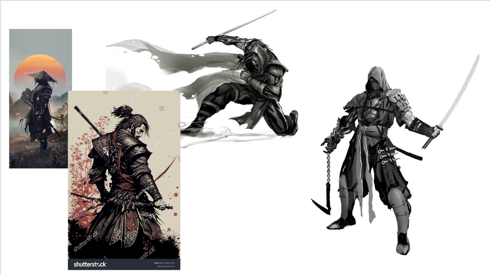
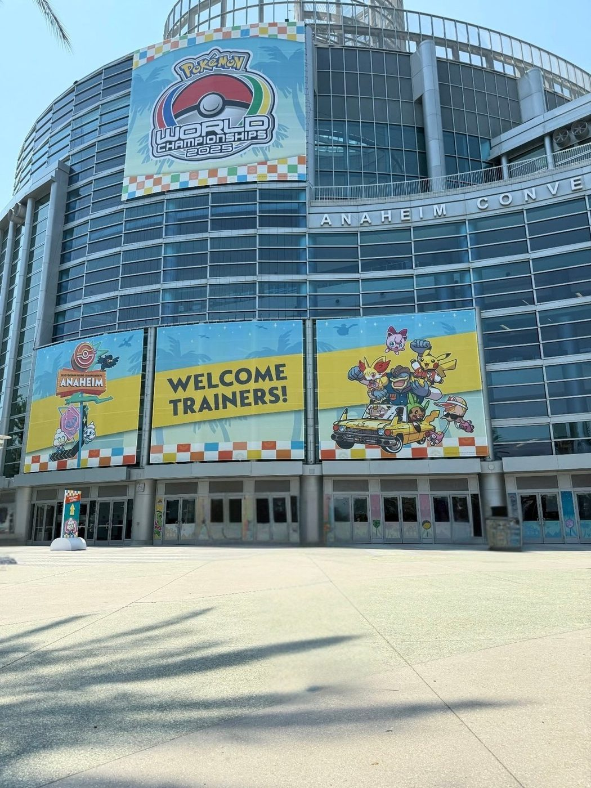

Design
Mechanics, rules, balance, pacing, feedback, and player choice.
Game Design • Strategy • Interactive Systems
I’m Charlie Barra, an aspiring game and interactive systems designer. I build projects that explore strategy, probability, player choice, and the small design decisions that change how people experience a game.
The through-line
Mechanics, rules, balance, pacing, feedback, and player choice.
Probability, matchups, risk, optimization, and changing metagames.
Prototypes, code, playtesting, iteration, and learning from what breaks.
Featured work

Flagship Case Study
An original multiplayer strategy card game about mining resources from a meteor, upgrading ships, managing risk, and disrupting opponents through events and hazards.
View Case Study →
Vision boards and prototype ideas exploring worldbuilding, player agency, and community-driven gameplay.
In development: a Python game focused on gameplay logic, state management, and player interaction.
In development: a simulator for matchup probabilities, draw outcomes, and competitive balance.
Competitive systems
What started as a game I loved became the first place I learned about probability, preparation, adaptation, and decision-making in a constantly changing competitive environment.

Top 100 globally • Senior Division • Anaheim, CA
Design notebook
Luck is interesting when players can prepare for it, respond to it, and sometimes use it creatively.
The best systems feel simple at first, then reveal depth as players understand more interactions.
Competitive systems reward efficiency, but good design still protects curiosity and experimentation.
Python game • TCG Matchup Probability Simulator • Interactive Learning Sandbox